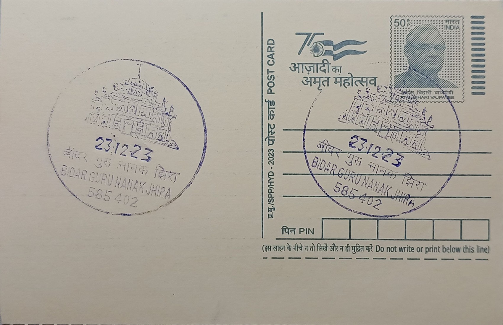

Guru Nanak Jhira
ಗುರುನಾನಕ ಝಿರಾ


The name 'Nanak Jhira' commemorates a miracle attributed to Guru Nanak (1469-1539) during his travels through the Deccan around 1512, as part of the second of his four great udasis that together covered some 28,000 kilometres across the subcontinent and beyond. Arriving at Bidar with his companion Mardana, the Guru is said to have encountered a Muslim ascetic settlement led by Pir Jalaluddin, whose followers were drawn by the devotional singing accompanied by Mardana's rebeck. At Jalaluddin's request, tradition holds that the Guru touched or lifted a stone on the arid hillside, from beneath which a spring of sweet water burst forth in a region long troubled by brackish or insufficient groundwater; the pool is still known today as the Amrit Kund, the 'pool of nectar', and gave the site its name, jhira meaning spring in the local idiom.
Gurdwara Nanak Jhira Sahib ranks among the most significant Sikh shrines in South India and is frequently cited as the southernmost historical gurdwara directly linked to Guru Nanak's own travels, making it an important waypoint in the network of Sikh pilgrimage sites that extends through the Deccan alongside places such as Nanded. Its significance rests less on architectural antiquity than on the continuous living tradition of veneration attached to the spring itself, which devotees collect as sacred water believed to carry healing and blessing, paralleling the role played by other Guru Nanak-associated water sources elsewhere in India. The shrine draws pilgrims not only from Sikh communities across the country but also from local Hindu and Muslim residents of Bidar, reflecting the syncretic circumstances of its founding legend.
Sikh control over the site was established in 1948, a position confirmed by a judicial verdict in 1950, after which a managing committee headed by Sardar Bishan Singh of Hyderabad undertook the construction of the present gurdwara complex. The main shrine building, Sri Harimandir Sahib, was completed in 1966, with the Guru Granth Sahib ceremonially installed on the occasion of the Hola Mohalla festival that year. The complex has since been built up around the Amrit Kund to include assembly halls, residential accommodation for pilgrims, and a langar hall serving free community meals, following standard Sikh gurdwara practice, with the architecture generally following the domed, white-washed style common to gurdwaras built in the twentieth century rather than any older Deccan idiom.
The gurdwara's calendar is marked by three major melas, held during Holi, Dussehra, and Guru Nanak's birth anniversary (Gurpurab), when daily footfall is reported to swell to around 30,000 visitors, compared with routine pilgrim traffic that totals an estimated four to five lakh people annually. These gatherings transform the otherwise modestly sized shrine into one of the larger temporary pilgrimage assemblies in the Bidar region, requiring expanded langar and accommodation arrangements each year. The persistence of this seasonal surge, consistent over decades, underscores how the site's religious draw extends well beyond Karnataka's small resident Sikh population to pilgrims travelling from Punjab and other northern states specifically to visit the spring.
Today the gurdwara is administered by a local managing committee in the tradition established after 1948, and it remains listed as a protected pilgrimage and tourist site by the Karnataka state tourism department, which promotes it alongside Bidar's fort and Bahmani-era monuments as part of the district's heritage circuit. Facilities at the complex have been periodically upgraded to manage the Amrit Kund's water supply and sanitation given the volume of pilgrims collecting water from it, though it continues to flow from the same spring point associated with the original legend. For visitors to Bidar, the gurdwara functions as both an active place of daily worship and a fixed stop on regional tourist itineraries, drawing a steady mix of religious pilgrims and sightseers to a town otherwise known primarily for its Islamic architecture.
| Date of Introduction | January 9, 2019 |
|---|---|
| Address | Sub Postmaster, |
| Guru Nanak Jhira SO, | |
| Bidar (dt.), Karnataka - 585402. |